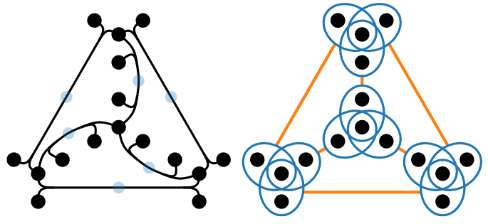

Advances in network visualisation with an application to serious games
PhD thesis, Imperial College London
(2021)
Abstract
This thesis concerns the visualisation of networks, through an in-depth study into
the node-link diagram representation. Three subtopics are explored within this
space. The first is the problem of node layout, where the optimisation of a popular
energy function, known as stress, is improved through an algorithm known
as stochastic gradient descent. The second is the method of edge bundling, where
the idea of hierarchical edge bundling is explored in the absence of a known ground
truth hierarchy. Its similarity to a topologically lossless bundling method known
as power-confluent drawing is then leveraged, in order to improve technical problems
with the underlying algorithms. The final topic is an engineering application
in the form of a serious game called EcoBuilder, which utilises the node-link diagram
to visualise the dynamical behaviour of food webs. Its purpose is to crowdsource
research through a citizen science approach, with outcomes in both visualisation
and mathematical ecology.
Links
Categories
Related software

pconfluent: power confluent drawings
Package for power confluent graph drawings.

s(gd)2
Graph layout using stochastic gradient descent.
EcoBuilder
Educational game about building ecosystems.